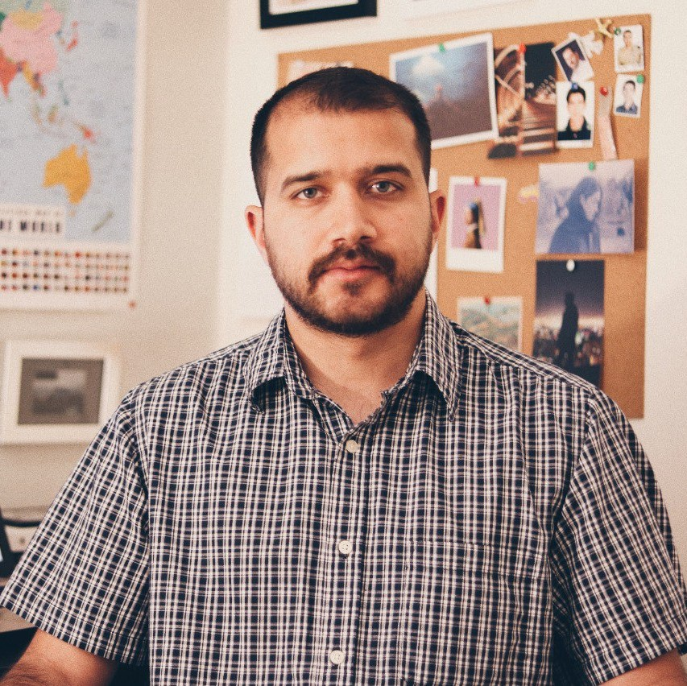

Sepehr Pourkhalili


Researcher in psychology and neuroscience, focusing on attention, concentration, and sensitivity in human behavior.
University of Guilan — Rasht, Iran
GPA: 17.08/20
Shiraz University — Shiraz, Iran
GPA: 15.65/20